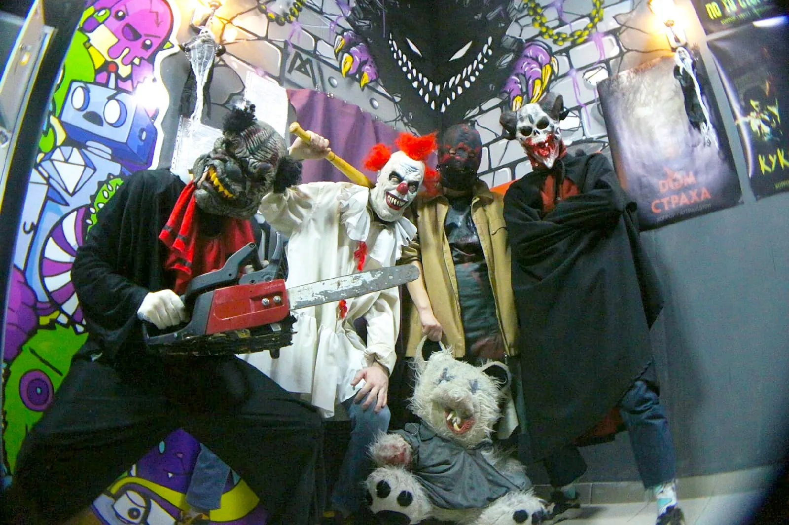
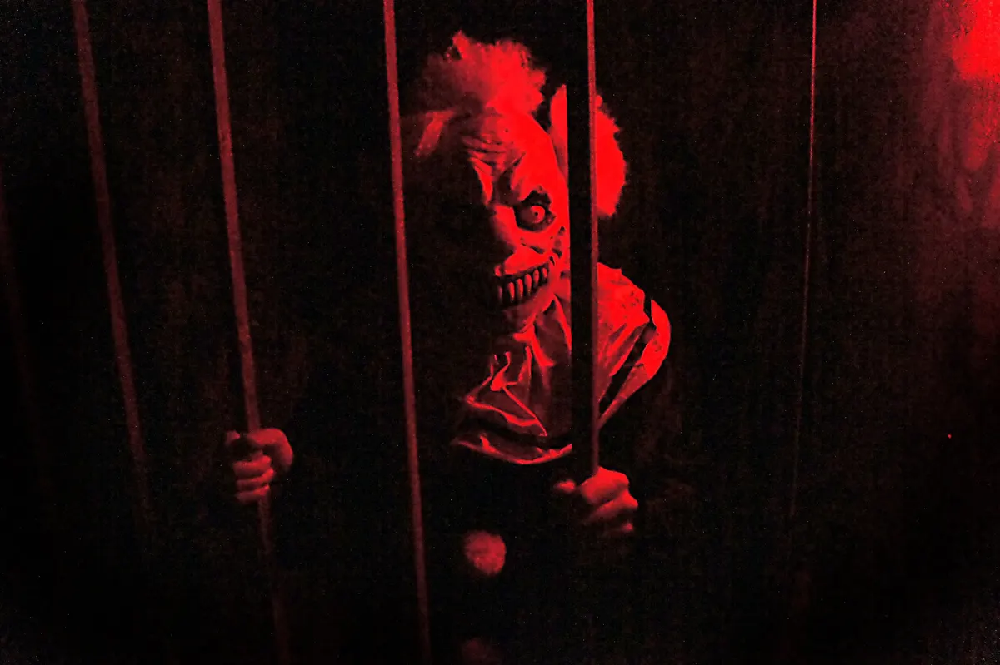
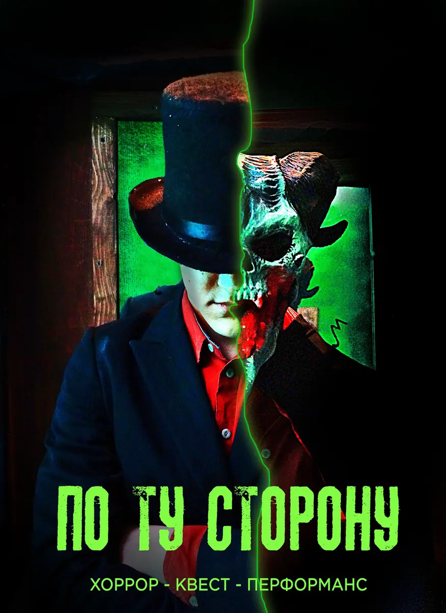
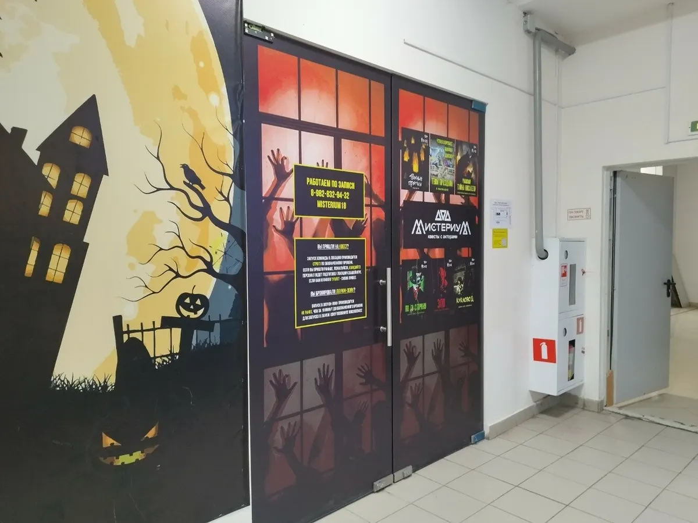

Квесты с актёрами · Ижевск
Страшные квесты с актёрами в Ижевске
Хоррор-квесты и экшн-игра «Тёмные прятки»: до 60 минут страха и адреналина. Есть игры для детей от 10 лет и для компаний 14+.
- Актёры, эффекты и большие локации
- Для детей от 10 лет и компаний 14+
- 5,0 и 121 отзыв на Яндекс.Картах

Игры и цены
Все игры длятся до 60 минут. Возрастные ограничения указаны у каждой.
Квесты для детей и семей
- «Проклятие оборотня» (10+)помогите снять проклятье и спасти Маркуса: актёр, загадки, эффекты, безопасный страх5 200 ₽
- «Тайна писателя» (10+)дом автора ужасов, большая локация, до 12 игроков, подходит для праздников5 200 ₽
Хоррор-квесты (14+ и 18+)
- «ЗЛО» (14+ и 18+)«Дом страха»: 4 персонажа, контакт и минимум загадок5 200 ₽
- «Кукловод» (14+ и 18+)хоррор-стелс, прячьтесь в темноте от маньяка, не для новичков5 200 ₽
- «По ту сторону» (14+ и 18+)квартира с паранормальными явлениями, до 12 игроков5 200 ₽
Экшн-игра
- «Тёмные прятки» (12+)170 м² лабиринта, ловушки, до 20 игроков, режим страшный или лайт5 400 ₽
Цены взяты с карточки квеста на Яндекс.Картах, обновлены 12 сентября.
Как пройти квест
- 01
Бронь
Выбираете игру, день и время, пишете количество игроков и возраст.
- 02
Приходите на Кирова, 142
Инструктаж перед игрой.
- 03
Игра до 60 минут
Актёры, загадки, эффекты и большая локация.
- 04
Праздник
Дни рождения и выпускные проходят в квестах для детей от 10 лет.



Что пишут гости
Для подростков
Водили детей 11-12 лет на «Проклятие оборотня», вышли с кучей эмоций.
Дни рождения
Дочь с друзьями отметила здесь 12-й день рождения.
Для компаний
Пишут, что остались в полном восторге от «По ту сторону».
Отзывы с Яндекс.Карт
«Отличный квест для подростков! Водили детей 11–12 лет на «Проклятие оборотня». Детям понравилось, вышли с кучей эмоций.»
Татьяна · 1 октября
«Отличное место весело и необычно провести время! Дочь с друзьями отметила здесь свой 12-ый день рождения.»
luybov s. · 28 августа
«Мы с компанией были на квесте "По ту сторону" и остались в полном восторге!»
Люба Кузнецова · 14 июня
Отзывы с карточки на Яндекс.Картах.
Частые вопросы
С какого возраста можно играть?
Квесты «Проклятие оборотня» и «Тайна писателя» подходят детям от 10 лет, «Тёмные прятки» от 12, «ЗЛО», «Кукловод» и «По ту сторону» от 14.
Сколько длится игра?
До 60 минут.
Сколько человек может играть?
«Тайна писателя» и «По ту сторону» до 12 игроков, «Тёмные прятки» до 20.
Где находится квест?
Ижевск, ул. Кирова, 142. Ежедневно 09:30-21:00.
Забронируйте игру
- Адрес
- ул. Кирова, 142, Ижевск
- Часы
- ежедневно 09:30-21:00
- Телефон
- +7 (982) 832-94-32